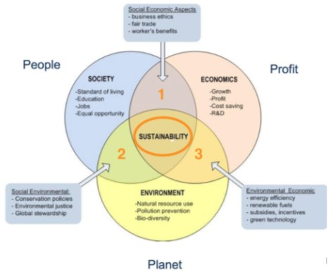

Corporate Responsibility Program
CSR Program
We at Group 7™ are very serious about our Corporate Social Responsibility.
This is mainly because we have a great impact on our employees and on the stakeholders of our company.
We aim to have a stakeholders Interaction maturity towards CSR.
This means that we lay a focus on sustainable business practices.
We are a company that strives to improve the welfare and well-being of all stakeholders of the company.
As an example, we would like to highlight our quarterly brunch. This is a brunch that we as a company hold with the
aim of allowing our employees to get to know each other in a non-work atmosphere
They are also encouraged to bring their children, for which we then provide various activities.
The CSR methodology we use is modern corporate philanthropy. We donate to a cause that helps parents who have to cope with the fact that they have lost a child. We have been doing this since the beginning, we even gave children of the affected families a chance to come visit our offices and try unreleased demo's of game's that have not yet been released.
Because we want to give back to the community where we locate our buildings, we hold an event where we will clean up a local park or something close to our headquarters. Here volunteers can then sign up to help out. These volunteers do not have to be employees or have anything to do with our company at all,  we just want as many people to sign up as possible. There is of course also a little reward at the end of the day, but this is different every time. There have been times when a food truck showed up and everyone got free food after fulfilling their good deed, or people got gift cards, and so on.
We chose 'Philanthropy' as a CSR methadology, because as we mentioned before, we have a strong commitment to contribute to the well-being of our stakeholders.
We also use have the 'Triple Bottom Line' as a CSR methadology. We even have work opportunities for the people with a handicap, or who have been labelled "unemployable". With this we show that not all our profit goes into our pockets, but that we also give back to the community. The job we offer is for these people is art, we want to have a drawing/designing contest for certain elements in our game. The winning design will be implemented in our game, and will be made a mural in one of the parks we have cleaned up/ maintained or build. There is also a chance that the designer will be offered a job on our team of designers.
Precieved benefits of our CSR program
Through our high involvement in the CSR event, of course our reputation also improves. Our high level of commitment to CSR naturally improves our reputation. Of course that is not the only thing that has improved, our social contract with our stakeholders has also improved. All our information about what we do with the money we set aside for charities is public in our brochure, we have never intentionally made stakeholders suffer through an unfair distribution of power, and everything we do to improve the lives of our employees and stakeholders is voluntary on their part.
Of course, there are always people who see the bad in everything, and many think that we carry so many problems with CSR because we have something to hide. But of course that's not true. We are not trying to avoid regulations, or to make ourselves look exceptionally good in the eyes of consumers. What we are trying to do is to be one step ahead of our competition, by building a better relationship with our users. This allows us to work more closely together, build more trust and generally produce better games.